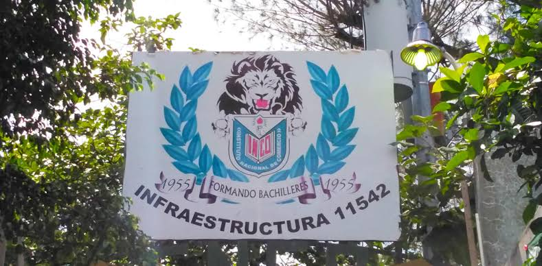
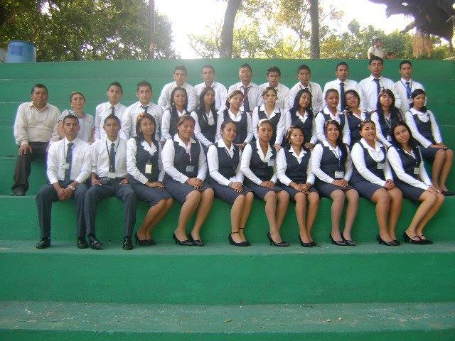

Misión
Formar profesionales técnicos integrales, capacitados en competencias comerciales, administrativas y tecnológicas, promoviendo la innovación y la ética.
Liderando la educación técnica, comercial y tecnológica con excelencia académica y valores institucionales de bachilleratos.

Formar profesionales técnicos integrales, capacitados en competencias comerciales, administrativas y tecnológicas, promoviendo la innovación y la ética.
Ser la institución educativa técnica de referencia nacional en la formación de líderes preparados para los retos de la economía global.
Nuestra identidad
El Instituto Nacional de Comercio INCO orienta su propuesta a la formación técnica, comercial y tecnológica. Su propósito es que cada estudiante pueda desarrollar conocimientos, habilidades y valores útiles para continuar sus estudios y participar con responsabilidad en el mundo laboral.
La educación comercial responde a la necesidad de comprender cómo se organizan las empresas, los servicios y las actividades económicas. Esa vocación da identidad al INCO y acerca el aprendizaje a situaciones prácticas.
La formación técnica combina conceptos con competencias aplicadas. En áreas como contabilidad, software y logística, el estudiantado explora herramientas, resuelve problemas y aprende a colaborar.
La tecnología y las formas de trabajar cambian constantemente. Por eso, la curiosidad, la capacidad de aprender y la adaptación son parte importante de la preparación para nuevos retos.
Esta reseña presenta la vocación educativa del instituto. Las fechas de fundación y los hitos de su historia institucional pueden añadirse cuando se cuente con información oficial verificada.
La preparación técnica se complementa con habilidades humanas que ayudan a aprender, trabajar en equipo y contribuir a la comunidad.
Aplicar lo aprendido, analizar información y encontrar soluciones a desafíos reales.
Actuar con honestidad, respeto y compromiso en los estudios y en el trabajo.
Usar herramientas digitales, pensar con curiosidad y prepararse para seguir aprendiendo.



Inicia tu preinscripción en línea.
PreinscribirmeMatrícula, evaluaciones y recesos del año.
Ver fechasServicios estudiantiles y acceso al portal.
Entrar al portal